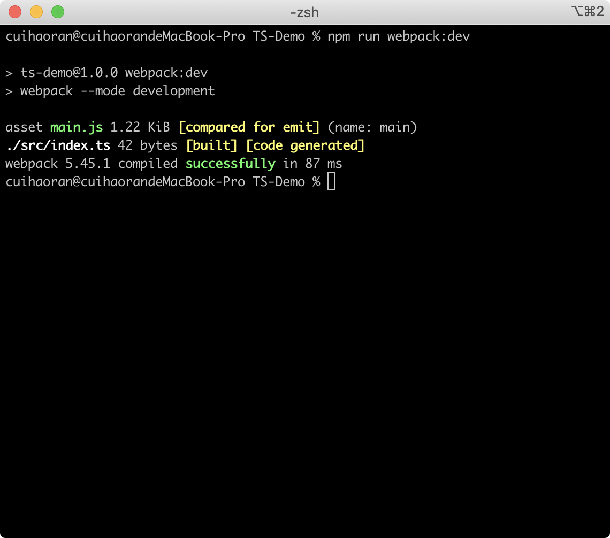
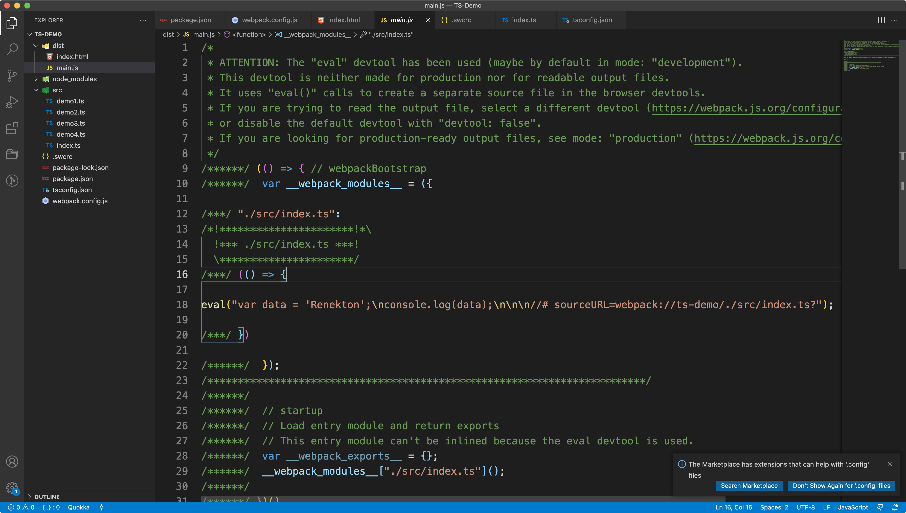
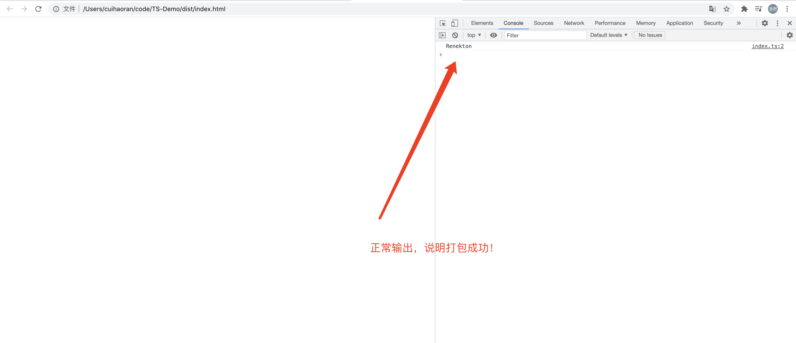
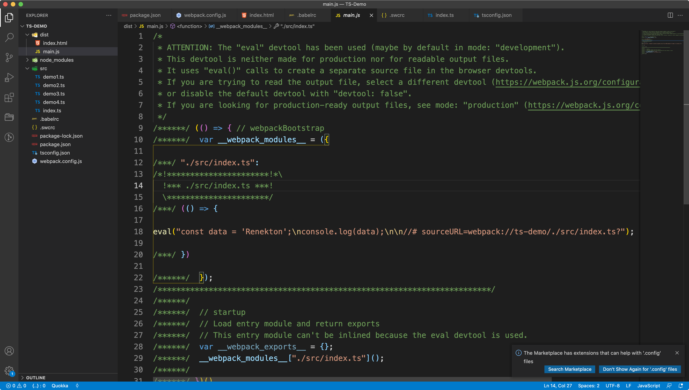
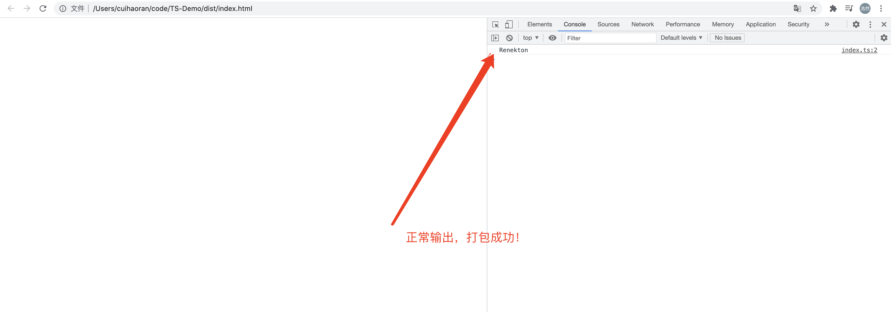
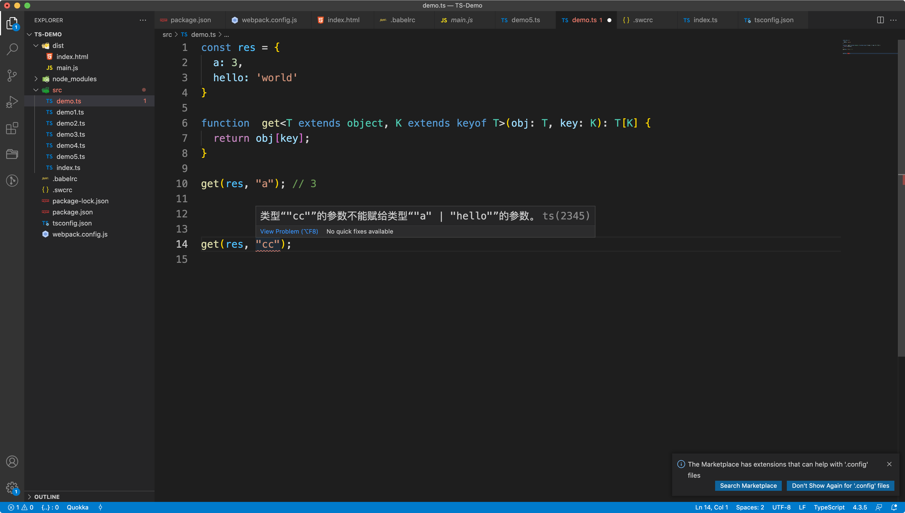

TypeScript从入门到实战——进阶篇
一、使用Webpack + TS构建开发环境
webpack本身提供了大量的有关于TS的支持，先安装webpack和webpack-cli：
## 安装webpack和webpack-cli
$ npm install -D webpack webpack-cli
然后我们在package.json中配置打包命令webpack:dev：
{
"name": "ts-demo",
"version": "1.0.0",
"description": "",
"main": "index.js",
"scripts": {
"dev": "ts-node-dev --respawn --transpile-only ./src/demo.ts",
"webpack:dev": "webpack --mode development"
},
"keywords": [],
"author": "",
"license": "ISC",
"devDependencies": {
"@swc/core": "^1.2.65",
"swc-loader": "^0.1.14",
"ts-node-dev": "^1.1.8",
"typescript": "^4.3.5",
"webpack": "^5.45.1",
"webpack-cli": "^4.7.2"
}
}
现在我们如果想对TS打包是不可能的，因为还没有安装loader。如果团队内习惯使用babel-loader那么你仍然可以使用babel-loader进行编译，在这里我们使用一个比较激进的loader——swc-loader。先来安装它：
$ npm install -D @swc/core swc-loader
Swc-loader并不是使用JS编写的，他是用Rust 编写，然后直接编译成二进制的。所以执行效率比较高。然后我们在webpack.config.js中进行配置：
// webpack.config.js
module.exports = {
module: {
rules: [
{
test: /\.ts$/,
exclude: /(node_modules|bower_components)/,
use: {
loader: "swc-loader",
options: {
jsc: {
parser: {
syntax: "typescript"
}
}
}
}
}
]
}
};
我们可以观察到webpack.config.js中应用了swc-loader，并对其进行了配置，具体配置写在了options中。如果配置全部写在webpack.config.js中会让webpack的配置文件变得十分臃肿，所以我们新建一个.swcrc文件，把配置信息分离到这个文件中（这和.babelrc的作用是一样的，webpack在打包的时候会自动去找项目根目录下的.swcrc文件读取配置。）。
写完了swc的配置这是如果运行打包命令，终端会报错，提示找不到打包的入口，那么我们需要在webpack.config.js中配置入口文件：
// webpack.config.js
const { resolve } = require('path');
module.exports = {
entry: {
main: resolve("./src/index.ts")
},
module: {
rules: [
{
test: /\.ts$/,
exclude: /(node_modules|bower_components)/,
use: {
loader: "swc-loader",
}
}
]
}
};
配置了入口文件在src/index.ts，那么我们在src目录下新建一个index.ts文件：
// src/index.ts
const data: string = 'Renekton';
console.log(data);
就写了一个输出语句，然后我们现在运行打包命令：
$ npm run webpack:dev

打包完成之后在项目的根目录下会有一个dist目录，里面有打包好的文件：

我们可以看到TS代码编程了JS代码，我们在dist目录下新建一个html文件，把打包好的main.js引入：
<!DOCTYPE html>
<html lang="en">
<head>
<meta charset="UTF-8">
<meta http-equiv="X-UA-Compatible" content="IE=edge">
<meta name="viewport" content="width=device-width, initial-scale=1.0">
<script src="./main.js"></script>
<title>Document</title>
</head>
<body>
</body>
</html>
现在在浏览器中运行：

到这里我们webpack打包TS文件就完成了。当然这里我们使用了swc-loader这种比较激进的方式，如果想使用这种东西，需要有一定的基本功，需要明白为什么要使用它，其实就是快~~
除了swc-loader这种激进的方式，我们还可以使用比较传统的babel-loader，只不过时间会很慢，首先我们要安装babel-loader和@babel/preset-typescript：
$ npm install -D babel-loader @babel/core @babel/preset-env
$ npm install -D @babel/preset-typescript
安装完之后，新建.babelrc，并且把webpack.config.js中管swc-loader改成babel-loader，并在.babelrc中设置babel的配置：
const { resolve } = require('path');
module.exports = {
entry: {
main: resolve("./src/index.ts")
},
module: {
rules: [
{
test: /\.ts$/,
exclude: /node_modules/,
use: {
loader: 'babel-loader',
}
}
]
}
};
## .babelrc
{
"presets": ["@babel/preset-typescript"]
}
配置完之后，把之前打包的main.js删除，重新执行打包命令：
$ npm run webpack:dev

仔细观察一下两次编译的结果，还是有些不同的。我们打开浏览器刷新一下，发现仍然能够正常输出。说明打包成功。

二、使用Parameters获取函数参数
const chr = (username: string, id: number) => {};
type yd = Parameters<typeof chr>;
const x = (...data: yd) => {
const [ username ] = data;
console.log(username);
}
x('cuihaoran', 20);
三、对象类型进行强制key校验
当我们日常开发中去取key的时候，尝尝会去到undefined。这个时候就需要对对象的key进行强制的校验。
const res = {
a: 3,
hello: 'world'
}
function get<T extends object, K extends keyof T>(obj: T, key: K): T[K] {
return obj[key];
}
get(res, "a"); // 3
get(res, "cc"); // error
我们可以看到，我们利用了泛型T代表object（这里是必然的，因为T extends object），和keyof运算符把传入的对象所有的可以全部取出。返回值为T[K]。
这样的话我们能取得只能是实际存在对象中的key，否则报错。

这一部分在TypeScript泛型这篇文章中也有详细的介绍。
三、TypeScript高级类型
interface IUser {
id: number;
name: string;
age: number;
}
// 必须字段转成可选字段
type PartialUser = Partial<IUser>;
// 可选字段转成必选字段
type PullDownRefresh = Required<partialUser>;
// 选择必选字段
type PickUser = Pick<IUser, 'id' | 'name'>;
// 排除字段
type OmitUser = Omit<IUser, 'id' | 'name'>;
// 排除掉两个类型的交集
type P = Exclude<'x' | 'a', 'x' | 'y' | 'z'>;
// 单独把某些类型提出来
type Select = 'id' | 'age';
// 以上的这些操作可以嵌套
type PartialSelect = Partial<Pick<IUser, Select>>
type OmitUser2 = Omit<IUser, 'id' | 'name'>;
// 类型合并
type Final = PartialSelect & OmitUser2;
const ss: Final = {
age: 20,
}
// Exclude、 Extract
interface FirstType {
id: number;
firstName: string;
lastName: string;
}
interface SecondType {
id: number;
address: string;
city: string;
}
type ExtractType = Extract<keyof FirstType, keyof SecondType>;
type ExcludeType = Exclude<keyof FirstType, keyof SecondType>;
四、玩转Record
// 将属性K 对应的T 转换为U
interface ProductIncard {
id: number;
name: string;
label?: string;
}
class CarModel {
// string为key（"renekton"），对应的T（ProductIncard）为ProductIncard，U为最后的结构
products: Record<string, ProductIncard> = {
"renekton": {
id: 1,
name: "cuihaoran",
label: ""
}
}
}
Record是用来描述对象的，类似于type Product = ProductIncard[]。只不过一个是对象，一个是数组。
五、TypeScript的默认参数
type CoreIconName = 'user' | 'customer';
const opts: CoreIconName = 'customer';
type LiteralUnion<T extends U, U=string> = T | (U & {});
interface GreetSettings {
greeting: string;
duration: number;
color?: false;
}
type Color = LiteralUnion<'red' | 'black' | keyof GreetSettings>;
const c:Color = "greeting";
六、检查参数不为null
type NonNullableType = string | number | null | undefined;
function showType(args: NonNullable<NonNullableType>) {
console.log(args);
}
showType('京程一灯');
showType(666);
// showType(null);
// showType(undefined);
type StringMap<T> = {
[p in keyof T]: string;
}
function showType2(args: StringMap<{ id: number, name: string }>) {
console.log(args);
}
showType2({ id: 'x', name: 'Test' });
七、apply的调用错误
interface Cat {
name: string;
}
const BobCat: Cat = {
name: 'bob'
}
function printCatName(this: Cat) {
console.log(this.name);
}
// 未完，以后细讲。